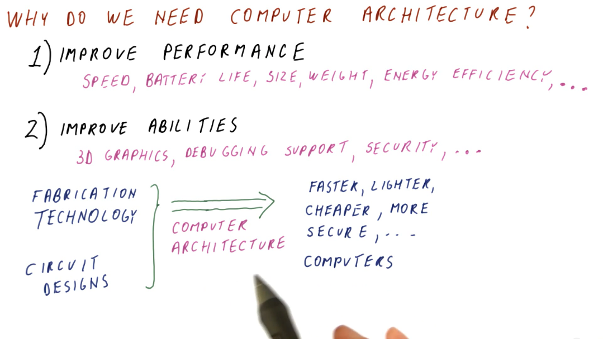
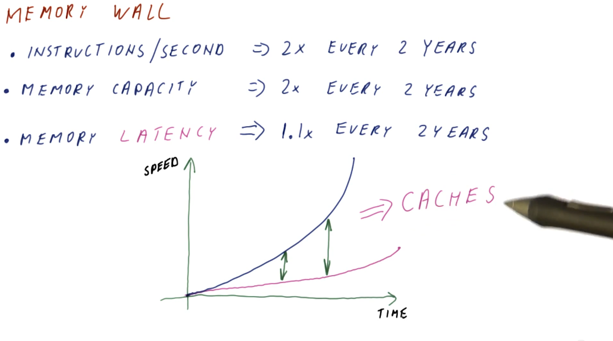

Welcome
This notebook contains my personal notes for CS6290: High Performance Computer Architecture offered at the Georgia Institute of Technology. A summary of the course follows:
This course covers modern computer architecture, including branch prediction, out-of-order instruction execution, cache optimizations, multi-level caches, memory and storage, cache coherence and consistency, and multi- and many-core processors.
Course links
- https://omscs.gatech.edu/cs-6290-high-performance-computer-architecture
- https://ebookcentral-proquest-com.prx.library.gatech.edu/lib/gatech/detail.action?docID=787253
Introduction
What is computer architecture?
We can think of computer architecture similar to how architecture is considered for building. Buildings are designed to be well-suited for a specific purpose. The same can be said of computers, as we design different computers for different purposes. Some examples are desktop computers, laptops, and cellphones; they all have different purposes and require different computer architectures.

Why do we need computer architecture?
- To improve performance based upon some specific measure. These measures could include:
- Speed
- Battery life
- Size
- Weight
- Energy efficiency, etc.
- To improve the abilities provided by a computer. These abilities could include:
- 3D graphics
- Debugging support
- Security, etc.
The first need for computer architecture is about making computers cheaper, faster, smaller, etc. while the second need is based around making new things possible/providing new functionality. Computer architecture utilizes discoveries in fabrication technology and circuit design to achieve the goals stated above.

Computer architecture and technology trends
Computer architecture is about building future computers. The progress in computer manufacturing technology is fast. We shouldn't design a new computer with current technology and parts. By the time we've designed our new computer, it's obsolete and using old technology. We need to track technology trends in order to predict what's available in the future, allowing us to better design a new computer using these new technologies.

Moore's law
Moore's law provides a good starting point for predicting what future computers will look like based upon what is currently available today. As computer architects, we can use these predictions to guide our expectations of what technologies will be available for use when designing future computers. Below is a high-level summary of Moore's law:

The memory wall
Processor speed doubles almost every two years, while memory capacity also experiences the same phenomenon. Memory latency, however, has not kept pace with processor speed and memory capacity. This is what's called the memory wall and, in order to mitigate these differences in speed when processors need to access memory, we have been using caches to close that gap. Caches can be thought of as a series of stairs for memory access speed, and cache misses are the base of the staircase with the slowest memory access speed possible. A high-level illustration of the memory wall trend is provided below:

Power consumption
There are two kinds of power that a processor consumes:
- Dynamic (active) power - consumed by activity in a circuit
- Static power - consumed when powered on but idle
Active power
Below is an illustrative representation of the equation for calculating active power consumption by a processor. The representation also displays how we can calculate the change in active power consumption when a different chip configuration is used, and if voltage and chip frequency are changed. An explanation of each variable in the active power equation follows:
- capacitance - roughly proportional to chip area / larger chips will have more capacitance
- voltage - quadratic relationship between voltage and power consumption
- frequency - clock frequency (GHz) of a processor
- alpha - activity factor (percentage of processor transistors active for any given clock cycle)

Static power
Static power is power consumed while the processor is idle. Some of this is due to the voltage being too low to prevent transistors from leaking/wasting energy, but it can also come from other sources as well. Below is a high-level representation identifying the relationship between static and active power as voltage increases or decreases in the circuit. This representation also identifies that there is some optimal voltage settings for circuits to avoid utilize too much power in bot the active and static states.

Fabrication cost and yield
The cost to manufacture and convert silicone wafers to useable computer chips is pretty much static. We, primarily, have to account for chip yield when a silicone wafer is divided into a number computer chips - some of these chips can have defects while others work fine. Below is high-level representation of the silicone wafer to computer chip manufacturing process, and how the yield is derived based upon the number of defects in wafer versus the number of chips extracted from a wafer.

Below is an example of how we can calculate the fabrication cost per chip based upon chip size. Smaller chips cost less to manufacture, while larger chips cost the most. Smaller chips, over time according to Moore's Law, will be able to do more for less as we are able to fit smaller transistors onto the chips. Larger chips will be able to remain the same size and cost, however, they will be faster overall due to Moore's Law.